건설기계설비산업기사 (2017-05-07 기출문제)
1과목: 기계제작법
1. 사인 바(sine bar)의 호칭 치수는 무엇으로 표시하는가?
- 바(bar)의 길이
- 평행면의 길이
- 로울러의 길이
- 로울러의 중심거리
(정답률: 80%)

2. 다음 중 절삭가공에서 빌트 업 에지(built-up edge)의 발생을 증가시키는 요인은?
- 절삭유의 사용
- 절삭깊이의 증가
- 절삭속도의 증가
- 공구 상면 경사각의 증가
(정답률: 100%)
3. 인발작업에서 지름 15mm의 철사(wire)를 인발하여 지름 13mm로 가공하였을 때, 단면감소율은 몇 %인가?
- 24.9
- 50.3
- 75.1
- 85.1
(정답률: 40%)
4. 다음 중 주물의 균열에 의한 결함을 예방하기 위한 방법이 아닌 것은?
- 급냉을 피한다.
- 라운딩 처리한다.
- 쇳물 아궁이를 크게 한다.
- 주물 제품의 두께 차이를 적게 한다.
(정답률: 80%)
5. 밀링커터의 인선을 구성하는 주요부의 작용을 설명한 것 중 틀린 것은?
- 절인각은 경사면과 여유면과의 맞대인 각을 말한다.
- 랜드(land)는 인선의 강도를 증가하기 위해 설계한 것이다.
- 경사각은 커질수록 절사저항은 감소되지만 인선은 약하게 된다.
- 여유각은 연한 재료에서는 작게, 경한 재료에서는 크게 하는 것이 일반적이다.
(정답률: 17%)
6. 튺수가공 방법 중 전기 화학적인 용해작용과 기계적인 가공을 복합시킨 가공법은?
- 방전 가공
- 선반 가공
- 전해 연삭
- 초음파 가공
(정답률: 24%)
7. CNC공작기계의 가공 프로그램에서 M-코드가 수행하는 기능은?
- 보조기능
- 이송기능
- 주축기능
- 준비기능
(정답률: 70%)
8. 급속에 대한 소성가공을 열간가공과 냉간가공으로 구별하기 위한 기준 온도를 무엇이라고 하는가?
- 단조 온도
- 변태 온도
- 담금질 온도
- 재결정 온도
(정답률: 100%)
9. 다음 더브테일 그림에서 D2의 치수를 구하는 식으로 옳은 것은?
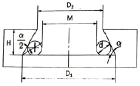
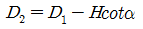
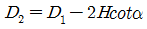
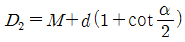
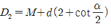
(정답률: 79%)
10. 다음 중 전기저항용접이 아닌 것은?
- 점 용접(spot welding)
- 심 용접(seam welding)
- 티그 용접(TIG welding)
- 프로젝션 용접(projection welding)
(정답률: 79%)
11. 슈퍼 피니싱(super finishing)에 대한 설명으로 틀린 것은?
- 가공물의 표면은 초정밀 가공되나 변질층이 많이 생긴다.
- 주로 원통면 가공에 이용되나 평면 및 내면가공에도 사용할 수 있다.
- 방향성이 생기지 않으며 짧은 시간 내 비교적 아름다운 면을 가공할 수 있다.
- 숫돌을 가공물표면에 작은 압력으로 가압하여 진동시키며 직선이송 또는 회전 이송 운동을 준다.
(정답률: 34%)
12. 수공구 취급에 대한 안전수칙으로 적합하지 않은 것은?
- 해머는 자루에서 빠지지 않도록 쐐기를 박는다.
- 렌치는 자기 몸 쪽에서 바깥쪽으로 미는 방식으로 사용한다.
- 드라이버의 날 끝이 홈의 나비와 길이에 맞는 것을 사용한다.
- 스크레이퍼 사용 시 한 손으로 일감을 잡는 것은 위험하다.
(정답률: 38%)
13. 주물사의 구비조건으로 틀린 것은?
- 내열성이 작아야 한다.
- 성형성이 좋아야 한다.
- 통기성이 좋아야 한다.
- 적당한 강도를 가져야 한다.
(정답률: 95%)
14. 다음 중 일반적인 공구재료의 구비 조건으로 틀린 것은?
- 피삭재보다 경도가 커야 한다.
- 고온에서 경도를 유지해야 한다.
- 화학적인 확산성이 좋아야 한다.
- 공구상면의 마찰계수가 작아야 한다.
(정답률: 24%)
15. 프레스가공 방법 중에서 전단가공의 종류가 아닌 것은?
- 컬링(curling)
- 노칭(notching)
- 블랭킹(blanking)
- 트리밍(trimming)
(정답률: 94%)
16. 강을 A3~Acm변태점보다 약 40~60℃정도의 높은 온도로 가열하여 균일한 오스테나이트 조직으로 된 상태에서 공기 중에서 냉각하는 작업으로 결정립의 미세화와 더불어 연신율이 좋은 미세한 층상의 펄라이트 조직을 얻을 수 있는 작업은?
- 담금질(quenching)
- 뜨임(trmpering)
- 심냉처리(sub-zero treatment)
- 불림(normalizing)
(정답률: 82%)
17. 한계게이지에 대한 설명 중 잘못된 것은?
- 신속한 측정으로 제품의 합격여부를 판단할 수 있다.
- 플러그게이지는 축용 한계게이지이다.
- 통과측과 정지측이 있으며 정지측으로 제품이 들어가지 않고 통과측으로 제품이 들어가면 그 제품은 공차내에 있는 것이다.
- 한계게이지는 용도에 따라 공작용 게이지, 검사용 게이지, 점검용 게이지 등으로도 분류한다.
(정답률: 40%)
18. 비 접촉식으로 측정하는 마이크로미터는?
- 미니미터
- 나사 마이크로미터
- 공기식 마이크로미터
- 하이트 마이크로미터
(정답률: 93%)
19. 강의 현미경 조직으로 지철 또는 a철이라 하며 0.0025% 이하의 탄소량이 고용된 고용체로 현미경 조직이 백색으로 보이며 무르고 경도와 강도가 작고 상온에서 강자성체인 것은?
- 페라이트(ferrite)
- 펄라이트(perlite)
- 시멘타이트(cementite)
- 오스테나이트(austenite)
(정답률: 85%)
20. M10×1.5의 암나사를 가공하려고 할 때, 다음 중 적합한 드릴 직경은 몇 mm인가?
- 6.5
- 7.0
- 8.5
- 9.5
(정답률: 88%)
2과목: 재료역학
21. 중앙에 지름 30mm의 구멍이 뚫려 있는 두께 2mm, 폭 100mm인 철판이 길이 방향으로 1000N의 인장하중을 받고 있다. 이 때 최대인장응력의 크기는 약 몇 MPa인가? (단, 이 경우 응력집중계수는 2.3이다.)
- 3.10
- 5.0
- 11.5
- 16.4
(정답률: 8%)
22. 단면(폭×높이)이 4cm×6cm인 직사각형이고, 길이가 2m인 단순보의 중앙에 집중하중이 작용할 때에 최대 처짐을 0.5cm으로 제한하려면 하중은 약 몇 N으로 해야 되는가? (단, 세로탄성계수는 200GPa이다.)
- 1680
- 3060
- 4320
- 5800
(정답률: 94%)
23. 그림과 같이 x축 방향으로 σx의 인장응력이 작용하고 있을 때, 경사단면 p-q에 작용하는 수직응력 σn과 경사단면 p-‘q’에 작용하는 수직응력 σn’사이의 관계식으로 옳은 것은? (단, 두 경사단면은 서로 직교한다.)
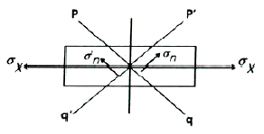
- σn=σx-σn’
- σn=σx+σn’
- σn=2σx-σn’
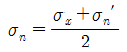
(정답률: 70%)
24. 균일한 기계적 성질과 균일한 단면적을 가진 길이 1m인 봉에 일정한 인장 하중을 주었을 때 길이가 1.001m가 되었다. 이 때 이 봉의 변형률은 얼마인가?
- 0.⑤
- 0.01
- 0.0⑤
- 0.001
(정답률: 87%)
25. 길이 3m, 단면이 3cm×3cm인 정사각형 단면의 외팔보의 자유단에 중심축에 직각방향으로 1.5kN의 하중이 작용한다. 이 때 보에 발생하는 최대 전단응력은 약 몇 kPa인가?
- 1667
- 2500
- 3333
- 5000
(정답률: 75%)
26. 그림과 같이 지름 20mm, 길이 1m의 강봉을 49kN의 힘으로 인장햇을 때, 이 강봉은 몇 cm가 늘어나는가? (단, 재료의 세로탄성계수는 200GPa이다.)
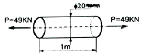
- 0.078
- 0.78
- 1.073
- 1.73
(정답률: 72%)
27. 건축물의 기둥을 설계함에 있어서 기둥의 단면을 정사각형으로 하는 경우와 원형으로 하는 경우를 비교하면 좌굴(세장비)의 관점에서 어느 쪽이 얼마나 유리한가? (단, 두 기둥의 단면적과 세장비는 동일하다.)
- 원형단면이 정사각형 단면보다 기둥의 길이를 약 4.8% 더 길게 할 수 있다.
- 원형단면이 정사각형 단면보다 기둥의 길이를 약 2.4% 더 길게 할 수 있다.
- 정사각형 단면이 원형 단면보다 기둥의 길이를 약 4.8% 더 길게 할 수 있다.
- 정사각형 단면이 원형 단면보다 기둥의 길이를 약 2.4% 더 길게 할 수 있다.
(정답률: 18%)
28. 그림과 같이 균일한 단면을 가진 봉이 하중을 받고 평형 상태로 있다. Q=2P인 경우 W는 얼마인가?
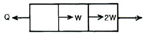
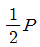
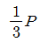
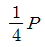
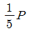
(정답률: 93%)
29. 5kN.m의 비틀림 모멘트만을 받고 있는 측의 지름은 약 몇 mm이상이어야 하는가? (단, 축 재료의 허용전단응력은 59MPa이다.)
- 60
- 64
- 76
- 87
(정답률: 74%)
30. 그림은 어떤 단순보에 작용하는 굽힘 모멘트 선도이다. 이 보에 작용하는 하중을 가장 옳게 설명한 것은? (단, 단수보의 총 길이는 4a이다.)
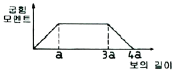
- 전체적으로 균일분포 하중을 받는다.
- 중앙 a~3a구간에만 분포하중을 받는다.
- 보의 중앙에만 집중하중을 받는다.
- 같은 크기의 2개의 집중하중이 a와 3a지점에 작용한다.
(정답률: 83%)
31. 2차원 평면응력 상태에서 x방향 수직응력과 y방향 수직응력은 각각 σx=-500kPa, σy=300kPa이고, 전단응력은 τxy=100kPa일 때 주응력 σ1과 σ2는 각각 몇 kPa인가?
- σ1=212, σ2=-612
- σ1=312, σ2=-512
- σ1=212, σ2=612
- σ1=312, σ2=512
(정답률: 93%)
32. 2축 응력상태에서 σx=30MPa, σy=-20MPa일 때 최대 전단응력은 약 몇 MPa인가?
- 5
- 15
- 25
- 35
(정답률: 75%)
33. 20℃일 때 길이 10m의 레일이 30℃에서는 몇 m가 되는가? (단, 레일의 선팽창계수는 1.12×10-5/℃이다.)
- 10.112
- 10.0112
- 10.00112
- 10.000112
(정답률: 67%)
34. 비틀림 모멘트를 받는 봉에 축적되는 탄성에너지 U를 나타내는 식은? (단, τmax: 최대 비틀림응력, G: 전단탄성계수, V: 봉의 체적이다.)
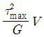
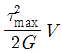
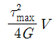
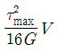
(정답률: 24%)
35. 그림과 같은 외팔보의 자유단에 집중하중 P가 수직방향으로 작용한다. 이 때 고정단에 작용하는 반력 또는 굽힘 모멘트 중 값이 영(0) 아닌 것으로 짝지은 것은? (단, M온 굽힘모멘트, V는 수직방향 반력, H는 수평방향 반력이다.)
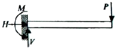
- M, H, V
- H, V
- M, H
- M, V
(정답률: 70%)
36. 그림과 같은 외팔보에 발생하는 최대 굽힘응력은 약 몇 MPa인가?
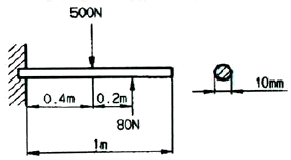
- 1258
- 1548
- 2038
- 2527
(정답률: 19%)
37. 단면적 A인 도형의 도심을 지나는 축에 관한 단면 2차 모멘트를 Ix라 하고, 그 축에서 d만큼 떨어진 평행축에 관한 단면 2차 모멘트를 Ix’라 하면 그 관계식은?
- Ix’=Ix-d2A
- Ix’=Ix+d2A
- Ix’=Ix+A2d
- Ix’=Ix-A2D
(정답률: 69%)
38. 그림에서 중앙점(A)에 작용하는 모멘트는 몇 N·m인가?
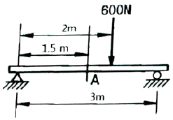
- 200
- 300
- 400
- 500
(정답률: 67%)
39. 다음 원형 단면 축의 비틀림에 대한 일반적인 설명으로 틀린 것은?
- 비틀림 모멘트는 전단응력과 극단면계수의 곱이다.
- 축에 있어서 전단응력은 비틀림 모멘트에 정비례하고 축지름의 3승에 반비례한다.
- 축의 출력은 회전수와 토크에 비례한다.
- 축을 비틀 때 지름이 크고 전단탄성계수의 값이 작을수록 비틀기가 어렵다.
(정답률: 84%)
40. 지름 2cm, 길이 3m의 봉이 축인장력 30kN을 받아 지름은 0.002mm 줄어들었고, 길이는 1.04mm 늘어났다. 이 재료의 푸아송 수 m은?
- 3.47
- 3.32
- 0.33
- 0.29
(정답률: 27%)
3과목: 기계설계 및 기계재료
41. 구리 및 구리합금에 관한 설명으로 틀린 것은?
- Cu의 용융점은 약 1083℃이다.
- 문쯔메탈은 60%Cu+40%Sn합금이다.
- 유연하고 전연성이 좋으므로 가공이 용이 하다.
- 부식성 물질이 용존하는 수용액 내에 있는 황동은 탈아연 현상이 나타난다.
(정답률: 67%)
42. 일반적으로 탄소강에서 탄소량이 증가할수록 증가하는 성질은?
- 비중
- 열팽창계수
- 전기저항
- 열전도도
(정답률: 24%)
43. 백주철을 고온에서 장시간 열처리하여 시멘타이트 조직을 분해하거나 소실시켜 인성 또는 연성을 개선한 주철은?
- 가단 주철
- 칠드 주철
- 합금 주철
- 구상흑연 주철
(정답률: 62%)
44. 고속도강을 담금질 한 후 뜨임하게 되면 일어나는 현상은?
- 경년현상이 일어난다.
- 자연균열이 일어난다.
- 2차경화가 일어난다.
- 응력부식균열이 일어난다.
(정답률: 31%)
45. 상온에서 순철(α철)의 격자구조는?
- FCC
- CPH
- BCC
- HCP
(정답률: 74%)
46. 플라스틱 성형재료 중 열가소성 수지는?
- 페놀 수지
- 요소 수지
- 아크릴 수지
- 멜라민 수지
(정답률: 67%)
47. 금속의 일반적인 특성이 아닌 것은?
- 연성 및 전성이 좋다.
- 열과 전기의 부도체이다.
- 금속적 광택을 가지고 있다.
- 고체 상태에서 결정구조를 갖는다.
(정답률: 31%)
48. 오일리스 베어링(oilless bearing)의 특징을 설명한 것으로 틀린 것은?
- 단공질이므로 강인성이 높다.
- 무급유 베어링으로 사용한다.
- 대부분 분말 야금법으로 제조한다.
- 동계에는 Cu-Sn-C합금이 있다.
(정답률: 29%)
49. 다음 중 알루미늄합금이 아닌 것은?
- 라우탈
- 실부민
- 두랄루민
- 화이트메탈
(정답률: 34%)
50. 강의 표면에 붕소(B)를 침투시키는 처리 방법은?
- 세라다이징
- 칼로라이징
- 크로마이징
- 보로나이징
(정답률: 54%)
51. 정(Chisel)등의 공구를 사용하여 리벳머리의 주위와 강판의 가장자리를 두드리는 작업을 코킹(caulking)이라 하는데, 이러한 작업을 실시하는 목적으로 적절한 것은?
- 리벳팅 작업에 있어서 강판의 강도를 크게 하기 위하여
- 리벳팅 작업에 있어서 기밀을 유지하기 위하여
- 리벳팅 작업 중 파손된 부분을 수정하기 위하여
- 리벳이 들어갈 구멍을 뚫기 위하여
(정답률: 54%)
52. 평벨트 전동장치와 비교하여 V-벨트 전동 장치에 대한 설명으로 옳지 않은 것은?
- 접촉 면적이 넓으므로 비교적 큰 동력을 전달한다.
- 장력이 커서 베어링에 걸리는 하중이 큰편이다.
- 미끄럼이 작고 속도비가 크다.
- 바로걸기로만 사용이 가능하다.
(정답률: 42%)
53. 지름이 10mm인 시험편에 600N의 인장력이 작용한다고 할 때 이 시험관에 발생하는 인장응력은 약 몇 MPa인가?
- 95.2
- 76.4
- 7.64
- 9.52
(정답률: 54%)
54. 축 방향으로 보스를 미끄럼 운동시킬 필요가 있을 때 사용하는 키는?
- 페더(feather) 키
- 반달(woodruff) 키
- 성크(sunk) 키
- 안장(saddle) 키
(정답률: 12%)
55. 지름 45mm의 축이 200rpm으로 회전하고 있다. 이 축은 길이 1m에 대하여 1/4°의 비틀림 각이 발생한다고 할 때 약 몇 kW의 동력을 전달하고 있는가? (단, 축 재료의 가로탄성계수는 84GPa 이다.)
- 2.1
- 2.6
- 3.1
- 3.6
(정답률: 34%)
56. 스프링에 150N의 하중을 가했을 때 발생하는 최대전단응력이 400MPa이었다. 스프링 지수(C)는 10이라고 할 때 스프링 소선의 지름은 약 몇 mm인가? (단, 응력수정계수
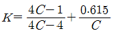
를 적용한다.)- 3.3
- 4.8
- 7.5
- 12.6
(정답률: 9%)
57. 맞물린 한 쌍의 인벌류트 기어에서 피치원의 공통접선과 맞물리는 부위에 힘이 작용하는 작용선이 이루는 각도를 무엇이라고 하는가?
- 중심각
- 접선각
- 전위각
- 압력각
(정답률: 0%)
58. 어느 브레이크에서 제동동력이 3kW이고, 브레이크 용량(brake capacity)을 0.8N/mm2·m/s라고 할 때, 브레이크 마찰면적의 크기는 약 몇 mm2인가?
- 3200
- 2250
- 5500
- 3750
(정답률: 43%)
59. M22볼트(골지름 19.294mm)가 그림과 같이 2장의 강판을 고정하고 있다. 체결 볼트의 허용전단응력이 36.15MPa라 하면 최대 몇 kN까지의 하중(P)을 견딜 수 있는가?
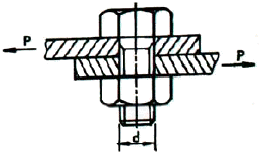
- 3.21
- 7.54
- 10.57
- 11.48
(정답률: 36%)
60. 420rpm으로 16.20kN의 하중을 받고 있는 엔드저널의 지름(d)과 길이(ℓ)는? (단, 베어링 작용압력은 1N/mm2, 폭 지름비 ℓ/d=2 이다.)
- d=90mm, ℓ=180mm
- d=85mm, ℓ=170mm
- d=80mm, ℓ=160mm
- d=75mm, ℓ=150mm
(정답률: 16%)
4과목: 유압기기 및 건설기계일반
61. 릴리프 밸브 등에서 밸브 시트를 두들겨서 비교적 높은 음을 발생시키는 일종의 자려 진동 현상은?
- 서징
- 언더랩
- 채터링
- 캐비테이션
(정답률: 34%)
62. 그림과 같이 유압기호가 나타내는 유압기기 명칭은?
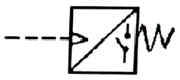
- 소음기
- 경음기
- 리밋 스위치
- 압력 스위치
(정답률: 32%)
63. 작동유가 갖고 있는 에너지의 축적용 및 펌프맥동 흡수용과 충격 압력의 완충작용도 할 수 있는 부품은?
- 유체 커플링
- 제어밸브
- 스테이터
- 축압기
(정답률: 50%)
64. 다음 유압유 중 일반적으로 점도지수가 가장 작은 것은?
- 석유계 유압유
- 유중수형 유압유
- 물-글리콜계 유압유
- 인산 에스테르계 유압유
(정답률: 36%)
65. 유압유의 점도가 높은 경우 발생하는 현상으로 옳지 않은 것은?
- 작동유의 비활성(응답형 저하)
- 동력 손실의 감소(장치 전체의 효율 상승)
- 내부 마찰 증대와 온도 상승(캐비테이션 발생)
- 장치의 파이프 저항에 의한 압력 증대(기계 효음 저하0
(정답률: 29%)
66. 어떤 유체가 체적이 6m3일 때, 무게가 6000kgf이다. 이 유체의 비중량은 약 몇 N/m3인가? (단, 중력가속도는 9.8m/s2으로 한다.)
- 490
- 980
- 4900
- 9800
(정답률: 47%)
67. 30rpm으로 55N.m의 출력 토크가 발생하는 회전 피스톤 모터를 설계하려고 한다. 모터의 크기를 210cm3/rev로 할 때, 필요한 유압유의 압력은 약 몇 MPa인가? (단, 모터의 토크 효율은 90%라고 가정한다.)
- 1.62
- 1.83
- 2.45
- 3.33
(정답률: 8%)
68. 일반적인 유압시스템에서 복동 실린더 선정 시 유의사항이 아닌 것은?
- 속도
- 회전수
- 사용 압력
- 실린더 안지름
(정답률: 16%)
69. 체크밸브, 릴리프 밸브 등에서 압력이 상승하고 밸브가 열리기 시작하여 어느 일정한 흐름의 양이 인정되는 압력은?
- 오버라이드 압력
- 오리피스 압력
- 크래킹 압력
- 리시드 압력
(정답률: 29%)
70. 다음 중 유압 모터의 특징으로 틀린 것은?
- 유체의 연속성을 이용하는 장치이다.
- 회전수를 무단으로 조정하기 어려우나 방향 전환은 쉽다.
- 전기모터에 비해 큰 출력을 발생시킬 수 있다.
- 기동 혹은 정지 시 원활한 운전을 얻기 곤란한 경우가 있어 특별한 회로를 필요로 하게 된다.
(정답률: 44%)
71. 단판 클러치에서 클러치에서 클러치 커버와 압력판 사이에 설치되어 있어서 압력판에 압력을 발생시키는 작용을 하는 스프링은?
- 고무 스프링
- 쿠션 스프링
- 클러치 스프링
- 리턴 스프링
(정답률: 36%)
72. 드롭 해머나 기동 해머와 비교한 디젤 해머의 특징으로 옳지 않은 것은?
- 피스톤의 1회 낙하 에너지가 상대적으로 크다.
- 높은 타격력이 단계별로 나뉘어 말뚝 중앙에 작용하므로 타격력에 비해 말뚝 머리의 손상이 적은 편이다.
- 소음 발생이 적어서 인구가 많은 도심지 공사에 사용하기 적합하다.
- 타격력의 크기에 비해 취급이 안전하고 기동성이 좋으며 부대 설비도 적은편이라 경제적인 시공이 가능하다.
(정답률: 27%)
73. 쇄석기(crusher) 중 1차 쇄석기(조쇄기)에 속하는 것으로 주로 큰 원석을 50~300mm 정도로 파쇄하는 것은?
- 콘 크러셔, 롤 크러셔
- 로드 밀, 햄머 크러셔
- 죠 크러셔, 자이어러터리 크러셔
- 임팩트 크러셔, 행머 밀
(정답률: 43%)
74. 파 올린 토사는 양현에 계류한 토운선에 적재한 후 만재된 토운선을 예인선으로 예인하여 선박 항해에 지장이 없는 위치에 버리며, 전후좌우의 이동은 4개의 앵커를 조종하면서 작업하는 준설선은?
- 크레인 준설선
- 그랩 준설선
- 디퍼 준설선
- 버킷 준설선
(정답률: 20%)
75. 중량물을 들어 올리거나 다른 작업 장치를 부착하여 토사의 굴토 및 굴착, 항타 작업 등을 수행할 수 있는 건설기계는?
- 크레인
- 롤러
- 어스 드릴
- 아스팔트 피니셔
(정답률: 47%)
76. 다음 설명에 해당하는 건설 기계는?
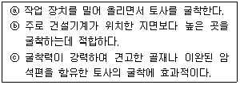
- 백 호(back hoe)
- 클램 셀(clam shell)
- 드래그 라인(drag line)
- 파워 셔블(power shovel)
(정답률: 22%)
77. 차량계 건설기계에서 선회하거나 커브길을 운전할 때 좌우바퀴의 회전수를 다르게 하여 원활하게 주행할 수 있는 기능을 하는 장치는?
- 터보장치
- 제동장치
- 현가장치
- 차동장치
(정답률: 40%)
78. 휠(wheel)형 굴삭기와 비교한 크롤러형 굴삭기의 장점이 아닌 것은?
- 견인력이 크다.
- 포장도로 운행에 적합하다.
- 안정성이 휠형보다 크다.
- 협소한 장소에서도 작업이 가능하다.
(정답률: 34%)
79. 플랜트 설비의 설치과정에서 설비 안전성 검사를 위하여 비파괴 시험을 실시하고 있다. 다음 중 비파괴 시험법으로 볼 수 없는 것은?
- 누설 검사
- 초음파탐상 검사
- 방사선투과 검사
- 화학분석 검사
(정답률: 29%)
80. 전압장비라고도 하며 제방, 비행장, 활주로, 도로 등의 노면에 전압을 가하기 위하여 사용하는 다짐 기계는?
- 로드 롤러
- 쇄석기
- 모터 스크레이퍼
- 아스팔트 플랜트
(정답률: 29%)